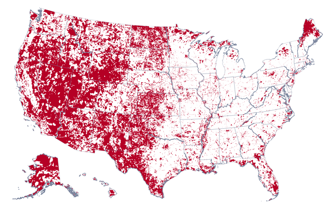
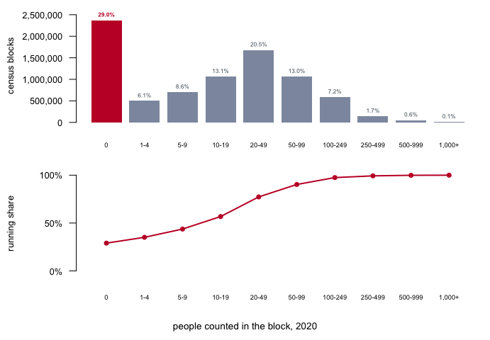
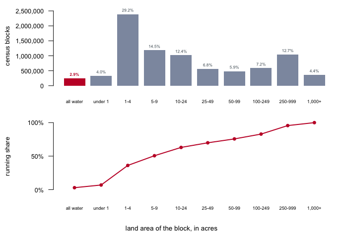
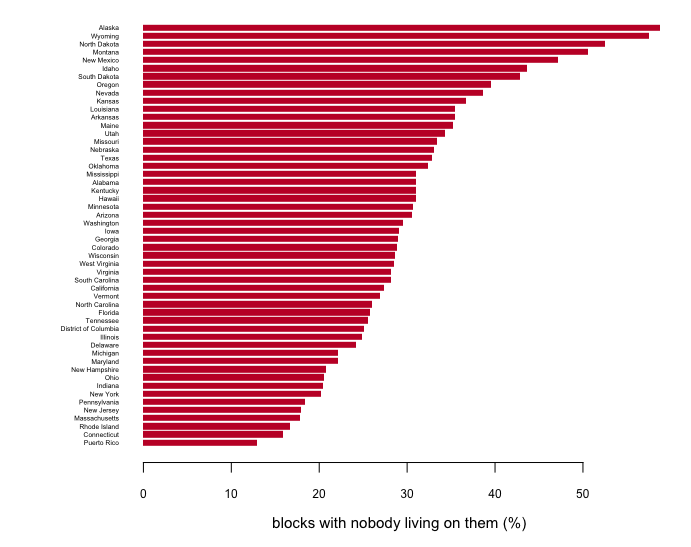
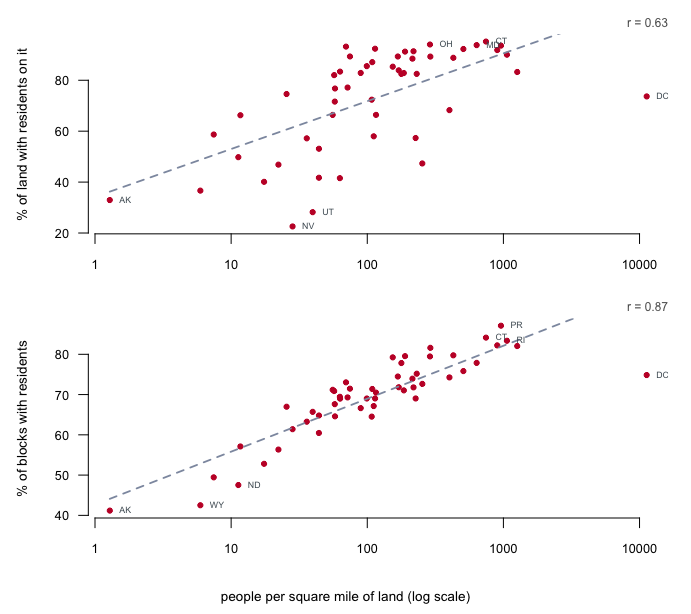
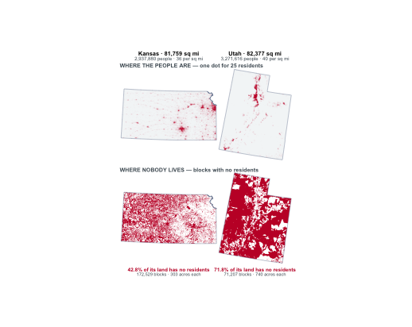
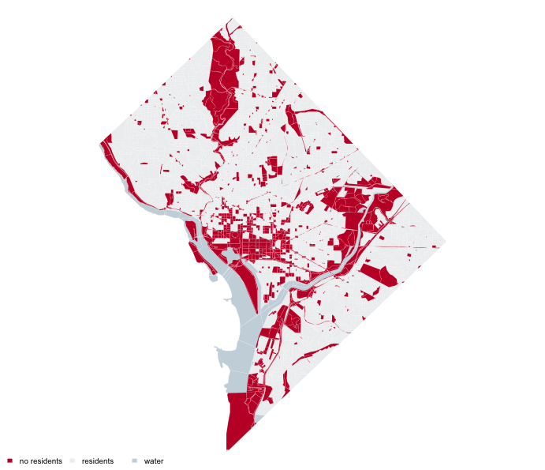

Figure 1. Every census block in the United States that recorded no residents in 2020. Red is a block with nobody living on it, white is a block with residents. Click a state to zoom to it; click again, or press Escape, to come back. Hovering gives that state’s population, its block count, the share of its blocks that are empty and the share of its land.
This is a map of where nobody lives in the United States. 41.5% of the country’s land area is in census blocks that recorded not one resident — an area of about 1,465,387 square miles — more than the combined land area of Alaska, Texas, California, Montana, New Mexico and Arizona, the 6 largest states in the country.
A census block is the smallest piece the Census Bureau cuts the country into, and the reason it exists is arithmetic. Every other geography the Bureau publishes — a tract, a city, a school district, a congressional district — has to be expressible as some pile of blocks, because counts add upward but cannot be divided downward. Make the smallest piece too big and whole classes of question stop having answers. The block is the Bureau’s answer to how small the smallest piece has to be.
The Bureau draws them, not the states, and it draws them along things a person could stand next to: streets, streams, railroad tracks, shorelines, and the legal boundaries of counties, cities and reservations.1 States do get a say. Through the Redistricting Data Program they can suggest where block boundaries should fall, so that blocks nest inside the precincts they actually run elections in. But the pen is federal, and a block is drawn for the convenience of counting rather than to mark anything a resident would recognize.
There are 8,174,955 of them and they are small. The median block with any land on it covers 455,841 square feet — about 10.5 acres — and holds 14 people.
The extremes run a long way from that median, in both directions and not together. The largest block in the country by area covers 9,226 square miles in North Slope Borough, Alaska, more land than 10 states and state equivalents including Vermont, whose 9,217 square miles it exceeds. Its population is 0: the biggest block in the country is an empty one. The largest by population is 8,727 people in Los Angeles County, California, on 38 acres.
That pairing is this brief’s subject. 2,368,443 blocks — 29.0% of every block in the country — recorded nobody at all in 2020. That is not a defect in the count. It is what happens when you cut a country into pieces small enough that most pieces are a lake, an interchange, a runway, a cemetery, or a stretch of national forest.
This brief shows where those blocks are, where the underlying data came from, and what a map of them can and cannot tell you.
One download, and it holds both halves of the problem.
TIGER/Line. The Bureau’s TIGER/Line
files are its digital outlines of every census unit. The layer used here
is TABBLOCK20, the 2020 tabulation blocks, one zipped
shapefile per state. There is no national file. To build the map you
download each state separately, fifty-two files in all, about 10 GB for
the country. Work through them one at a time: unzip a state, read the
handful of columns you need, then delete what you unzipped before
starting the next, so only one state is ever open. Keep the archives
themselves and a second run costs nothing, since a file already on disk
is not fetched twice. If space is short, they can go once the tables
exist; nothing later reads them again.
The count rides along with the shape. Every block
record in those files carries a POP20 field: the total
population the 2020 decennial census counted in that block. It is not an
estimate and not a sample. It is the decennial count, the same number
published in the P.L.
94-171 Redistricting Data Summary File that every state legislature
receives for redistricting. The Bureau prepends it to the geography, so
a block’s boundary and its population arrive together, in one file,
already joined.
The same counts are also served, one variable at a time, by the Census Data API, which has a chapter of its own. For a map of every block in the country it is much the slower road: blocks cannot be asked for a whole state at once, so covering the country takes some 3,100 requests against the 52 files downloaded here.

Figure 2. How many people live in a census block. Blocks grouped by population, from empty to a thousand and over; the red bar is the 2,368,443 with nobody. Bins widen toward the tail because block populations do: binned this way the whole range fits one axis that starts at zero, so every bar’s length is its count and nothing has to be logged or broken. The panel beneath is the running share — the portion of all blocks at or below each bin. Hover a bin in the web edition for its exact count.
The shape says the block is a small thing. The median block in the country holds 14 people. If you exclude blocks that are unoccupied, the median population of blocks is 28. 45.3% of all blocks hold ten people or fewer, and the running share passes half by the 20-49 bin. A census block is not a neighborhood; it is closer to a city block, which is what it was named for.
This matters for reading any block-level statistic. A percentage computed on a unit holding fourteen people is mostly noise, and the Bureau’s disclosure-avoidance noise is deliberately largest, in relative terms, exactly here.

Figure 3. How much ground a census block covers. The same blocks, binned by land area in acres instead of by population, with the same widening bins and the same running share beneath. The red bar is the 239,227 blocks whose land area is zero. A block cannot have no area; these are the ones that are all water, and every one of them carries water area in place of land — a reservoir, a bay, a stretch of river given a block of its own. Half of all blocks are under 5-9 acres.
Set the two figures against each other and they dispose of the first explanation anybody reaches for. Empty blocks are not mostly water. 2.9% of blocks have no land at all, while 29.0% have nobody on them, so water can account for at most a tenth of the emptiness — and it accounts for exactly that: 2,130,094 of the 2,368,443 empty blocks, 89.9%, are dry land that nobody lives on. Rivers and reservoirs are a rounding correction here, not the reason.
The two categories do not even nest cleanly. 878 blocks with no land area at all report residents anyway, which is what a marina or a row of houseboats looks like in a file that measures land.
Put the two figures together and the block is small in both senses at once: a median of fourteen residents on a median of a few acres. That is the unit every block-level statistic in American politics is computed over, and the unit a district is assembled from.

Figure 4. The share of each state’s blocks that recorded nobody. Sorted rather than alphabetical, because the ordering is the finding. Hovering a bar in the web edition gives the counts underneath the percentage.
The range runs from Alaska at 58.8% to Puerto Rico at 12.9%. It is tempting to read this as a map of emptiness, and it is partly that. But it is also a map of how the Bureau cut each state. Blocks are drawn along visible features, so a state with a dense grid of section-line roads gets many small blocks whether or not anyone lives on them, and a state with a lot of water gets a lot of water blocks. Alaska is genuinely empty; it also has an enormous coastline and river network, each stretch of which is its own block.

Figure 5. How much of a state is lived on, against how dense it is. One dot per state on a shared log axis, because state densities span four orders of magnitude, from 1.3 people per square mile in Alaska to 11,286 in the District of Columbia. Both panels are drawn as occupancy rather than emptiness, so both rise: the top is the share of a state’s land with residents on it, the bottom the share of its blocks. The chapter’s own quantities are one minus each, and the hover gives them. Dashed lines are least-squares fits, stopped where they would leave the panel. Only the extremes and the states furthest from each line are labeled.
The two panels disagree, and the disagreement is the point. Density predicts how much of a state’s blocks are lived on rather well — it accounts for about 76% of the variation between states. It predicts how much of a state’s land is lived on much less well: about 39%.
That ordering is backwards from what you would want, and the reason is the thing this brief keeps returning to. A block count is partly a record of how the Bureau cut a state, and the Bureau cuts dense places into small pieces. So the block measure is contaminated by the very thing it is being compared against, and tracks it well for a reason that has little to do with land. The land measure is the substantive one, and it is loose: Nevada has residents on only 22.6% of its land and Connecticut on 95.2%, a difference that is about federal ownership and settlement pattern rather than about people per square mile. The two measures agree with each other only to 0.74.
On the raw scale neither relationship survives; both correlations fall to near nothing. Whatever this tracks, it tracks the order of magnitude of a state’s density, so the distance from Wyoming to Ohio matters far more than the distance from Ohio to New Jersey.
Part of the answer is the threshold, which is one person. A block counts as inhabited if a single resident is counted anywhere on it, however many acres it covers, and the map says nothing more: white means one resident or a thousand and one, with no way to tell them apart. So a population spread thinly but evenly can leave a state looking full, and a population gathered into one corner can leave the same state looking empty, at the same density either way.
A word first about what “no residents” does and does not mean. It is a statement about where people sleep, not about whether the land is used: a block holding a steel mill, a rail yard, a shopping center or an airport has nobody living on it and is red here. What these maps show is land with no residents, which is a narrower thing than empty land.
Kansas and Utah put it beyond argument. They are the same size — 81,759 and 82,377 square miles, less than one percent apart — and they hold nearly the same number of people, 2,937,880 and 3,271,616, so their densities sit within four people per square mile of each other. Nobody lives on 42.8% of Kansas. Nobody lives on 71.8% of Utah: 24,155 square miles more, which is more ground than the whole of West Virginia.
What separates them is not how many people there are but where the people are allowed to be. Utah’s are gathered along the Wasatch Front and most of the rest of the state is federal — range, forest, park, proving ground. Kansas’s are spread thinly but evenly across private farmland on a section grid, and a dispersed population is very good at putting at least one person on every block. The block counts carry the same fact: Kansas is cut into 172,529 blocks against Utah’s 71,207 for the same ground, averaging 303 acres each against 740.

Figure 6. Two states the same size, holding the same number of people, 24,155 square miles apart on how much of them is lived on. Kansas and Utah, four panels at one scale. The top row is population — one dot for 25 residents, scattered inside the block it belongs to rather than stacked on the block’s center. A dot is a sample and not a census of its own block: the median inhabited block in Kansas holds eleven people, so a block of that size draws a dot about half the time and the dot stands for its neighbors as much as itself. Blocks holding a single resident never host one. The bottom row is the same two states with every block that has no residents in red. Reading down a column shows what a correlation cannot: Utah’s people are gathered in one band along the Wasatch Front and the rest of the state is red, while Kansas’s are spread over the whole state and its red is a speckle threaded between them.
So what is red on these maps is not thinly settled land. It is land with nobody, and the two are different things.
And then there is the point stranded at the right of both panels.

Figure 7. Every census block in the District of Columbia. Red is a block with no residents, pale gray is a block with residents, and blue-gray is a block that is entirely water. Water is drawn as its own class rather than folded into the red, because a block with nobody on it because it is the Potomac is a different fact about a city than a block with nobody on it because it is a park, and merging the two would let the rivers argue the case.
The District is the densest place in the country, 11,286 people per square mile of land. 1,512 of its 6,012 blocks — 25.1% — recorded nobody, and 1,409 of those are dry land. They cover 16.1 of the District’s 61.1 square miles, 26.4% of it.
The shapes are recognizable if you know the city, and that is the argument. The long wedge running north from the middle is Rock Creek Park. The band across the center, west of the Capitol, is the Mall. The eastern edge is the Anacostia and the parkland along it; the large form in the south is a military installation. None of this is unpopulated in the sense of being remote. It is unpopulated because it is a park, a monument, a rail yard, a base, a river — land in a dense city that no one is counted as living on.
That is why the District sits where it does in Figure 4: it is not a failure of the relationship between density and emptiness so much as a demonstration of what emptiness is actually measuring. A place can be as dense as anywhere in America and still be a quarter empty, because emptiness is a fact about how land is used and how it was cut, not only about how many people live nearby.
The 29.0% is a fact about blocks, not about people or land, and the three do not track each other. Nothing here says how much of the country is uninhabitable, only which units recorded no usual residents on 1 April 2020. A block containing a large prison, a dormitory closed for the pandemic, or a seasonal resort counted empty that day may be busy most of the year.
The map is drawn from the land blocks. 238,349 of the empty blocks
are water and are not drawn, because including them fills the Great
Lakes and every coastal bay with solid color and makes the map a map of
hydrography. That is a presentation choice, and it is reversible; the
land-area figures are unaffected either way, because the Bureau’s
ALAND20 already excludes water.
Empty is not the same as thinly settled, and this is not a population density map, though Figure 5 shows how much of one it is. Density is people divided by area, a continuous quantity every block has some value of. Emptiness is a threshold applied to a unit: zero, or not zero. A solid red county on this map means its blocks crossed that threshold, not that nobody lives nearby.
The outlines in Figure 1 are simplified, so no individual block on it is the right shape. Do not measure anything off it. The built tables carry the counts; the figure carries the pattern.
And zero is a published number, not a raw one. The 2020 counts passed through disclosure avoidance before release, which can move a small count by a little. At the block level that noise is proportionally largest, though a block that is a reservoir was not going to be populated either way.
state_blocks.csv — divide pop by
blocks for each state. Which states put the fewest people
in a block, and is that the same list as the emptiest states in Figure
3?state_blocks.csv joined to zero_land.csv —
rank states by pct_zero, then by
zero_land_sqmi. Name a state that is high on one list and
low on the other, and say what the Bureau did to produce that gap.block_pop_hist.csv — the last row is a bucket, every
block of 1,000 people or more. How many blocks are in it, and what kind
of place holds that many people inside one block?block_pop_hist.csv — compute the share of the national
population living in blocks of ten people or fewer. Compare it with the
45.3% of blocks that size. Explain the difference to someone in
one sentence.POP20 against the same counts served
by the API. Report how many disagree, and decide which you would trust
in print.Data
TABBLOCK20 layer — the boundary of every 2020 tabulation
block, one file per state, carrying GEOID20,
ALAND20, AWATER20 and POP20. This
is the only file the build downloads: POP20 is the 2020
decennial count for that block, so the population arrives prepended to
the geography. https://www2.census.gov/geo/tiger/TIGER2020/TABBLOCK20/POP20 reports, and the
file state legislatures receive. Not downloaded here; cited because it
is what the number in the shapefile is. https://www.census.gov/programs-surveys/decennial-census/about/rdo/summary-files.htmlThe data itself
Every figure above is drawn from these tables. They are plain CSV, they open in a spreadsheet, and they are yours to take further.
block_pop_hist.csv,
block_size.csv,
dc_blocks.csv, dc_facts.csv, dc_frame.csv, facts.csv, map_frame.csv, map_states.csv, map_zero.csv, state_blocks.csv,
zero_land.csv
Method
Documentation
I want to rebuild a public dataset from its original source, without any starting files. Please do the following and show your work. THE SOURCE, and there is only one. TIGER/Line 2020 tabulation blocks, one zipped shapefile per state: https://www2.census.gov/geo/tiger/TIGER2020/TABBLOCK20/tl_2020_<FIPS>_tabblock20.zip Open, no key, no account. About 10 GB for the whole country across 52 files (the 50 states, DC and Puerto Rico). Every block record carries its own population. POP20 is the total population the 2020 decennial census counted in that block -- a complete count, not an estimate and not a sample, the same number published in the P.L. 94-171 redistricting file. It comes prepended to the geography, so the boundary and the count arrive in one file and nothing has to be joined. Do not fetch the Census API for this: it serves the same counts one variable at a time and will not return a whole state's blocks at once, so it turns a 52-file download into some 3,100 requests. The attribute table also carries GEOID20 (the 15-character block identifier), ALAND20 (land area, square meters) and AWATER20. For the tables below you need only the attribute table, the .dbf inside each zip; the geometry is needed only for the map. WHAT TO BUILD. 1. A table of every census block in those 52 files with its 2020 population. Report the national total and how many blocks recorded zero. 2. A count of blocks at each exact population from 0 to 1,000, with everything above 1,000 in one bucket. Report the median block population, the median among blocks with at least one resident, and the share holding ten or fewer. 3. A per-state table: blocks, blocks with nobody, total land area, and the percentage of each. 4. A national map of the zero-population blocks. Keep the blocks where POP20 is zero, and COUNT THEM BEFORE YOU CHANGE THE GEOMETRY: how many there are, how many of them have land area (the rest are water), and how many square miles of land they cover. Only then dissolve the touching ones together for drawing. THINGS THAT WILL BITE YOU. - GEOID20 is text, not a number. Read as a number, a 15-digit identifier becomes 1.3121e+14 and leading zeros vanish. The same is true of the 2-character state code: "09" read as 9 will not match "09". - Water blocks have zero population and are real. Decide whether they belong on your map and say which you chose; drawing them fills the Great Lakes. - Dissolving destroys the block as a unit. After it, counting shapes counts REGIONS, not blocks: a thousand touching empty blocks become one polygon. Take every number about blocks off the undissolved table, or carry it through the dissolve as a summed field -- give each block a 1 and sum it, and sum ALAND20 the same way. If your block count drops when you dissolve, you are reporting the wrong thing. - Dissolving makes polygons with holes. Draw each polygon's rings together under an even-odd fill rule, or the holes get painted as fill. - Round coordinates only AFTER projecting. Rounding longitude and latitude rounds to whole degrees. - Simplify each state to the size it will be DRAWN at, not to one national tolerance, if you want a map that survives being zoomed into. CHECK YOUR WORK. The copies this book used were downloaded in September 2026. If your rebuild matches them, you should find: - 8,174,955 blocks holding 334,735,155 people, across 52 states and state-equivalents - 2,368,443 blocks with nobody living on them -- 29.0% - a median block population of 14, or 28 among blocks with at least one resident; 45.3% of blocks hold ten people or fewer - emptiest Alaska at 58.82%, least empty Puerto Rico at 12.90% - 2,130,094 of the empty blocks have land area, covering 1,465,387 square miles -- about 41% of U.S. land, against 29% of blocks - the largest block by area is 9,226 square miles in the North Slope Borough, Alaska, and its population is zero TIGER/Line 2020 is a finished product; it will not change until the 2030 cycle publishes its successor.
The rule and the definition are in the Bureau’s glossary entry for census block; the visible-feature principle is why a river or an interstate so often has blocks of its own on either side of it.↩︎